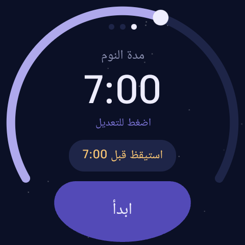
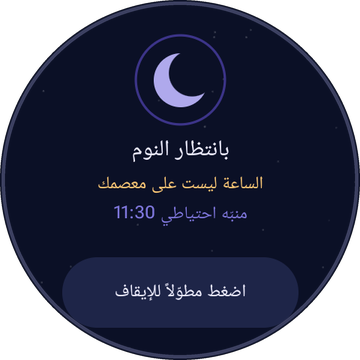
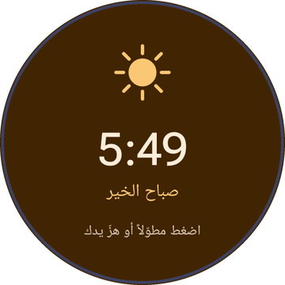
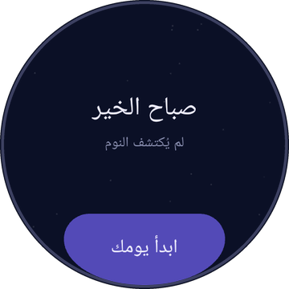

العدّ من لحظة النوم
تختار المدة وتضغط «ابدأ»، فيبدأ العدّ من الوقت الذي غفوت فيه، لا من وقت استلقائك. والدقائق التي احتجتها حتى تنام لا تُحسب من نومك.
المنبّه العادي يعدّ من لحظة استلقائك.
أما DreamPulse فيعدّ من لحظة نومك.
منبّه نوم لساعات Wear OS
أنام بعد صلاة الفجر، ولا أغفو بمجرد أن أضع رأسي على الوسادة: عشر دقائق في ليلة، وأربعون في أخرى. والمنبّه العادي يقتطعها كلها من نومي. لذلك صنعت DreamPulse: يراقب نبض قلبك وحركتك، ولا يبدأ العدّ إلا حين تغفو فعلاً.
مجاني · Wear OS 3 أو أحدث · بياناتك لا تغادر ساعتك
تختار المدة وتضغط «ابدأ»، فيبدأ العدّ من الوقت الذي غفوت فيه، لا من وقت استلقائك. والدقائق التي احتجتها حتى تنام لا تُحسب من نومك.
يُضبط لحظة البدء على المدة وساعة إضافية، فتستيقظ حتى لو لم يُكتشف نومك، أو أُعيد تشغيل الساعة في منتصف الليل، حتى قبل فتح قفلها.
إن كان لديك التزام، حدّد وقتاً لا يتجاوزه المنبّه، مثل «ليس بعد السابعة»، مهما تأخّر نومك. وإن سافرت، اتّبع توقيتك الجديد.
في الربع ساعة الأخيرة، إن تقلّبت في نوم خفيف أيقظك حينها. ولا تكفي رعشة واحدة، بل يلزم حركتان منفصلتان.
تتدرّج الشاشة من لون الليل إلى لون الفجر، ويتوقّف المنبّه بضغطة مطوّلة في أي مكان أو بهزّة من يدك.
كم نمت، وكم احتجت حتى غفوت، وكم استهلكت الليلة من البطارية، لآخر سبع ليالٍ. وينبّهك قبل البدء إن كانت البطارية ضعيفة.
أخطأت النسخة الأولى في أول ليلة حقيقية: قالت إنني نمت الساعة 5:08، بينما سجّل Samsung Health الساعة 4:54. وبعد أن استيقظت، قرّرت أنني نائم من جديد.
فأعدت كتابة طريقة الكشف بناءً على ما أظهره سجلّ تلك الليلة فعلاً. المنطق كله في صنف صغير مغطّى بالاختبارات، ومنها اختبارات مبنية على لياليّ الحقيقية: SleepDetector.kt.
# awake baseline = heart rate in the first minutes asleep if still 10 min and HR <= baseline - 15% or still 15 min and HR <= baseline - 5% or watch says "asleep" and still 5 min or still 25 min (no heart rate available) # watch off the wrist -> nothing counts onset = halfway between last movement and first low HR # replaying that night: Samsung Health 04:54 DreamPulse 04:54
لقطات من ساعتي Galaxy Watch7، وصفحة السجلّ تعرض لياليّ الحقيقية.




لا يملك DreamPulse إذن الاتصال بالإنترنت أصلاً، فلا يستطيع إرسال بياناتك إلى أي مكان حتى لو أراد. سياسة الخصوصية كاملة.
قريباً على Google Play لساعات Wear OS 3 أو أحدث التي فيها حسّاس لنبض القلب. جُرِّب على Samsung Galaxy Watch7.
انضمّ إلى التجربةالشيفرة كاملة على GitHub.
DreamPulse الآن في مرحلة التجربة المغلقة قبل النشر للجميع. إن كانت لديك ساعة بنظام Wear OS، راسلنا ببريدك في جوجل لتنضمّ إلى المجرّبين.
يعمل على ساعات Wear OS 3 أو أحدث التي فيها حسّاس لنبض القلب، مثل ساعات سامسونج جالاكسي من الجيل الرابع فما بعد وساعات جوجل بكسل. جُرِّب حتى الآن على Galaxy Watch7.
يرنّ المنبّه الاحتياطي الذي ضُبط لحظة البدء: المدة التي اخترتها وساعة إضافية، أو موعد الاستيقاظ الإلزامي إن كان أقرب.
نحو سبعة عشر بالمئة في الليلة على Galaxy Watch7. لذلك ينبّهك إن بدأت الليلة والبطارية أقل من عشرين بالمئة.
يتوقّف الكشف ما دامت الساعة خارج معصمك، فلا تُعدّ ساعة على طاولة نائمة. ويبقى المنبّه الاحتياطي في موعده.
لا. DreamPulse منبّه، ولا يُقصد به تشخيص أي مرض أو علاجه.
DreamPulse is a sleep alarm for Wear OS watches that starts counting when you actually fall asleep, not when you go to bed. It reads heart rate and movement, detects sleep onset, and sets the alarm from that moment. A backup alarm is set the second you start, an optional wake-by time caps the night, and Smart Wake rings a little early if you turn over in light sleep during the last 15 minutes.
DreamPulse has no internet permission: heart rate, movement and sleep history never leave the watch. No account, no ads, no analytics. Available in English, Arabic and Turkish. See the Privacy Policy. Contact: contact@x13labs.com.